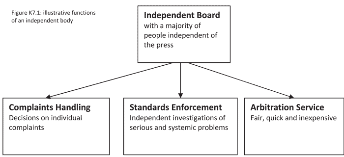
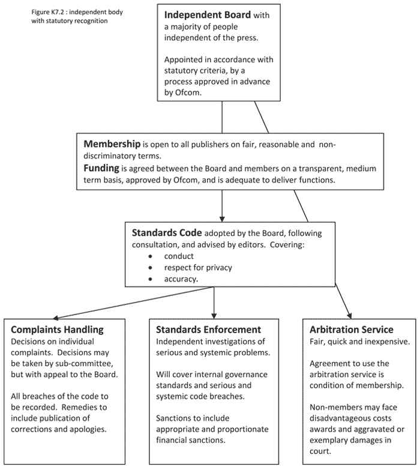

CHAPTER 7
CONCLUSIONS AND RECOMMENDATIONS FOR FUTURE REGULATION OF THE PRESS
1. Introduction
1.1 Earlier parts of this Report have set out in considerable detail the systems currently in place which seek to address press standards in an attempt to support high quality journalism while at the same time protecting the rights and interests of individuals. This has included examining the formal systems in place within individual titles, the informal culture and practices within titles (and across the press) and the industry agreed standards as embodied in the Editors’ Code of Practice which form the standard for the Press Complaints Commission (PCC) when giving advice or handling complaints. Throughout, I have drawn conclusions on the adequacy and effectiveness of those systems.
1.2 It is important to make the point, yet again, that I recognise that most of the press, most of the time, do meet the high standards that the UK public is entitled to expect. I have explored good practice in the Report,1 looking both at the generic importance of a free press and at examples of good practice across the industry. However, when looking at whether the standards regime in place is adequate, it is important that the analysis takes account not only of what happens most of the time but also, and critically, what the regime allows to happen some of the time. And there can be no doubt that, on occasion, there has been a significant failure of standards within and across parts of the national press. To some extent, these significant failures have been conceded by everyone: I have concluded, however, that they are more widespread than has been universally acknowledged.
1.3 That these failures have included breach of civil rights on a substantial scale is made evident by the civil claims that have already been settled by the News of the World (NoTW) in respect of phone hacking. The reports of the Information Commissioner in 2006 provided prima facie evidence of criminal breach of data protection legislation on behalf of journalists across a number of areas of the national press. And, of course, the police are still investigating a substantial number of suspected criminal offences, not just at the NoTW, but elsewhere in News International (NI) and in some other titles.2 Arrests have been made covering unlawful interception of communications and payments to public officials. Some suspects have been charged, in particular in relation to conspiracy to intercept communications without lawful authority. I can obviously make no comment on these cases and do not pre judge any of them. It is, however, appropriate to observe that the fact that such a significant police investigation has resulted in so many arrests and charges so far, at least gives rise to a legitimate cause for concern.
1.4 The criticisms that can be levied against the press on the basis of the evidence that this Inquiry has heard are set out elsewhere in this Report.3 My conclusions on the effectiveness of the PCC as an industry self-regulator have been dealt with earlier.4 It is abundantly clear from this that current systems of both internal governance in some parts of the press, and industry self-regulation of the press, have not worked and are not working.
Can the PCC continue to act as regulator?
1.5 In Chapter 1 above, I set out the criteria that I consider need to be met for a regulatory regime to be considered effective. The system operated by the PCC falls short of these criteria on a number of key points. First, it has lost credibility with the public, with politicians and with the press itself. This is not just a view that I have reached, but is shared by Lord Black in his own submission to this Inquiry5 on what the future regulatory regime should look like. On top of that, the departure of Northern and Shell from the system has shown that it is not able to deliver complete coverage, even of the major national newspaper groups.
1.6 The PCC lacks the independence that is critical to building public confidence in a regulator. It has been dominated by the industry, both through the influence of the Press Board of Finance (PressBoF), particularly in relation to appointing the Chair and the press members of the Commission, and through the presence of serving editors in both the Code Committee and on the Commission itself.
1.7 The Editors’ Code, whilst widely considered both within and outside the industry as being a good code, provides a set of general requirements. These often contain a measure of uncertainty over how and when they might apply. The development of the Code over the years has achieved a great deal. It can, however, be improved to provide a constructive ethical and legal framework within which journalists should work. In any event, compliance with, and enforcement of, the Code has been inadequate and intermittent.
1.8 The structures and practices of the PCC have constrained it to acting as a mediator in respect of complaints, rather than having any enforcement role that is consistent and effective. The failure to identify any code breaches where a mediated settlement could be reached, or to provide meaningful statistics in relation to complaints brought and how they were resolved, means that there is no authoritative picture of just how often breaches have occurred and where they have occurred. The manifest failures of the PCC to take any steps to address the reports from the Information Commissioner and the discredited investigations and conclusions by the PCC into phone hacking (since abandoned), demonstrate that the PCC, despite calling itself a regulator and referring to self-regulation of the industry, has not acted as regulator of standards as opposed to a reactive case-handler.
1.9 The remedies available to the PCC have proved an inadequate deterrent to breach. Whilst the industry have shouldered the full cost of operation of the PCC, the PCC has not been provided with the funding that it would have needed to act as a credible regulator.
1.10 It is clear, therefore, that continuation of the status quo is not a credible option, and no one has suggested that it is.
2. Options put forward
The industry proposal
2.1 The inability of the PCC to fulfil the required role has been recognised and accepted by the industry, which has put forward its own proposal for the future in the form of a submission from Lord Black, as the Chairman of PressBoF. That proposal is described6 and analysed7 earlier. As I have already said, that proposal does represent a significant improvement on the PCC as currently constituted and I recognise, and am grateful for, the efforts that have gone into constructing what is intended to be a new, more independent and more effective model. However, unfortunately, although it would represent an improvement on the status quo, and aspects of the framework could be built on, I conclude that the extent of industry control within the proposed system is a fundamental flaw.
2.2 First, the proposal does not have the clear support of any larger proportion of the industry than the current system. If the PCC is inadequate, at least in part, because a major national newspaper group sits outside it, then Lord Black’s proposal must also be inadequate. Northern and Shell has not said explicitly that it would not join the organisation if it was to be established, but its evidence to the Inquiry is sufficiently negative to give a strong steer that that is the case. Certainly, there must be a substantial doubt as to the ability of this proposal to command full industry support and cooperation, and there is no sufficient mechanism for the critical goal of full participation by all.
2.3 Second, the system as proposed provides no long term stability. This has two features. The first is that a five year contract would bind members into the club for that period, but there is no guarantee that the system would continue to operate beyond the first five year term. The second feature is that it provides no assurance that the level at which standards or safeguards would be set would meet the level rightly expected by the public. Or that, once set, they would remain at that level. Thus, the proposal does not provide sufficient long term stability, durability or guarantee. That is not to say that contracts between the regulator and the regulated entity have no role to play in a future model; it is simply the case that they do not, on their own, provide sufficient assurance of long term effectiveness.
2.4 Third, and of critical significance, the model presented by Lord Black fails to offer genuine independence from the industry. The industry, primarily through the Industry Funding Body (IFB), would have substantial influence over the appointment of the Chair of the Trust, as well as having ‘responsibility’ for the Code and having to approve any changes in the regulations. The continuation of the Code Committee with a majority of serving editors, acting in more than an advisory role, does not allow for independent setting of standards.
2.5 A new system must have an independent and effective enforcement and compliance mechanism. As I have already said, I endorse the approach to internal company governance proposed by Lord Black. In particular, I support the proposal that complaints should be dealt with in the first instance by publishers and the requirements for an annual return on compliance to the regulator, and a named senior individual within each title with responsibility for compliance and standards. These are real innovations and are welcome. However, the proposal still has serving editors on the body making decisions on complaints, and this does not provide the required degree of independence of enforcement. The proposal for a standards and compliance arm, with both its ongoing monitoring role and its ability to carry out investigations, is welcome, although in practice, as currently set out by Lord Black, it could be so drawn out and so hedged about with appeals that I doubt it could ever be used effectively.
2.6 A new system must have the ability to offer meaningful remedies to those who have been harmed. This proposal does not offer any significant improvement on the current PCC approach in this regard. It must also be able to apply effective sanctions to those who continue to breach standards: although real movement has been made in that direction, through the proposals on investigations and the power to fine, there are serious concerns about it resulting from procedural complexity that is greater and more extensive (thereby causing significant delay) than is necessary even when having full regard to the vital requirements of fairness. The improved transparency is to be welcomed, but it is not sufficient.
2.7 Finally, an effective regulatory system must be adequately financed and have sufficient independence from its funding body to operate independently. It is impossible for me to take a view on what constitutes adequate funding given the early stage of development of the proposal. What is clear, however, is that the IFB has sole discretion to decide on the funding and this cannot give the regulator sufficient independence to carry out its role properly.
Other proposals
2.8 Many proposals, with various degrees of detail, were put forward by interested parties and I would like to express my gratitude to all of them for the efforts that they made. These proposals are examined in detail elsewhere.8 It is fair to say that, whilst there are many excellent and helpful ideas contained within those proposals (a number of which I am happy to adopt), there are none that, on their own, sufficiently meet all the criteria that I set down.
2.9 If I am not to adopt a proposal that has been put in front of the Inquiry I must instead construct one myself. In section 4 below, I look at what a satisfactory system must contain, but first I address the question of coverage.
3. A new system must include everyone
3.1 A new system must be effective, and one of the key criteria of effectiveness is that it should include all major publishers of news (if not all publishers of newspapers and magazines). This has been an almost universal view from the witnesses who have given evidence to the Inquiry in relation to future regulation; they have been clear that any new system should cover all news publishers, and that compliance with it should not be a matter of choice. There has been a striking level of agreement between commentators, the industry and politicians as to the desirability of all newspapers being covered by a regulatory regime, although not everyone has explained how they would deliver such comprehensive coverage. The Prime Minister, the Rt Hon David Cameron MP, said:9
“What we actually have to deliver is that it is compulsory and has all those things that I said [i.e. independence, penalties, compulsion, toughness, public confidence and all the rest of it]”.
3.2 The Deputy Prime Minister, the Rt Hon Nick Clegg MP, stopped short of explicitly calling for compulsion, but was clear that the system should include everybody:10
“…it’s hopeless if we end up, as has been the case recently in parts of Canada, for instance, where just great swathes of the media have just opted out of the regulatory system altogether. You have to have buy-in from everybody.”
3.3 The Rt Hon Ed Miliband MP set out a number of criteria for a new body, including complete coverage of the newspapers:11
“A new body should have: a) clear independence from those it regulates and freedom from political interference; b) proper investigative powers; c) an ability to enforce corrections; d) a system that is focused on the needs of the public which is accessible for all and not available only to the rich; e) a system that applies to all newspapers.”(emphasis added)
3.4 The Joint Committee on Privacy and Injunctions considered the role that should be played by regulation and said:12
“It is essential that membership of the reformed media regulator extends to all major newspaper publishers. It should no longer be possible for a title unilaterally to opt out of regulation with no sanction forthcoming.”
3.5 The Core Participant Victims argued that all newspapers and magazines should fall within the jurisdiction of the regulatory regime and comply with the requirements of adverse adjudications or investigations.13
3.6 The current PCC Chair, Lord Hunt, said that a new system would not be perceived to be effective, and indeed that the credibility of the new system would have been fatally undermined, if a ‘big fish’ were not a part of it; he recognised that Northern and Shell qualified as a ‘big fish’ for these purposes.14, 15
3.7 A previous PCC Chair, Sir Christopher Meyer told the Inquiry:16
“No system of self-regulation can survive the wilful refusal of a major player to take part. There may be a case for back-stop law or regulation making membership of the PCC compulsory.”
3.8 A number of commentators have pointed out that the Lord Chief Justice, in his speech last year, argued for a self-regulatory system. He did, as do I, but he also insisted that any new self-regulatory system should cover the whole industry:17
“The new PCC – that is the new body currently in my contemplation in any new system of self-regulation – must be all inclusive. You might perhaps be willing to discount a news sheet circulated to about 25 people, but any national or regional paper would have to be included. In short any new PCC would require to have whatever authority is given to it over the entire newspaper industry, not on a self-selecting number of newspapers.”
3.9 From within the industry there has similarly been general agreement that any system should be comprehensive in its coverage. Thus, Paul Dacre, Editor-in-Chief of Associated Newspapers, and editor of the Daily Mail, in his presentation to a seminar at the very beginning of the Inquiry, said:18
“…there’s one area where Parliament can help the press. Some way must be found to compel all newspaper owners to fund and participate in self-regulation. God knows the industry fought hard enough to prevent it, but the Express group’s decision to leave the PCC was a body blow to the commission. How can you have self-regulation when a major newspaper group unilaterally withdraws from it?”Whilst he has subsequently resiled from advocating statutory intervention to achieve the goal of comprehensive coverage, his view that all newspapers and magazines should be covered by the new regulatory system was repeated in a submission to the Inquiry in July:19
“I also believe absolutely that one of the main responsibilities of the new regulatory system should be to ensure that the Editors’ Code is followed both in spirit and the letter by all newspapers, magazines and, importantly, their Online versions.”
3.10 This is consistent with the approach taken by Viscount Rothermere, the current owner of the Daily Maily & General Trust, who told the Inquiry:20
“I would certainly agree that in order for self-regulation to work, I think that you would have to have all members of the industry support it, yes. Or the defined industry support it, whatever that definition was.”
3.11 Joint owner of Independent Print Limited, Evgeny Lebedev, told the Inquiry, “I think everybody in the industry has to be part of this new future body in order for it to work .” 21 Similarly, Aidan Barclay, Chairman of the Telegraph Media Group said, “I think it does need to include everybody .” 22 James Murdoch, former Chief Executive of NI, from a slightly different perspective, said, “I also think it’s difficult to allow an industry in and of itself to control itself on a voluntary basis, given the concerns that we obviously all have.” 23
3.12 It is worth noting two other, albeit contrasting, political opinions. The Rt Hon Kenneth Clarke QC MP said:24
“I believe we do need a new regulator- one with substantially more power and independence than the PCC, which failed in its previous incarnation, and no longer commands the confidence of the public.”He went on to say that he agreed with Lord Hunt that participation of all the big players is highly desirable if the new system is to have meaning and said that a very difficult question that goes to the heart of the effectiveness of a new body is how you ensure membership of all powerful media voices.25
3.13 By contrast, the Rt Hon Michael Gove MP was very cautious about any system of regulation, expressing the concern that regulation does not always deliver the outcomes desired, but might nonetheless result in a curtailing of freedoms. He said that he was not necessarily advocating a free-for-all, but he was clearly entirely untroubled by the thought of some, or all, of the press existing outside of a system of standards regulation.26
3.14 So, with the exception of Mr Gove (although, if present press reports are correct, there are others), the very strong view expressed to the Inquiry by politicians in Government and Opposition, from the victims of press abuse, from press regulators and from those at the head of the industry itself, was that any new system of regulation should cover all significant news publishers, and I entirely agree. I therefore recommend that a new system of regulation should not be considered sufficiently effective if it does not cover all significant news publishers. The challenge, then, is to find a way of achieving that result.
3.15 The first task is to look at the suggestions made by all those quoted above as to how they would achieve full coverage of a new system. Mr Cameron was reluctant to reach for statute to compel regulation of press standards, but did not rule it out:27
“I think as we go at this, we have to understand the real concern there is about statutory regulation. That doesn’t mean you rule it out, but it means try and make everything that can be independent work before you reach for that lever. But, of course, if you had to undertake it, the more undertakings, the more safeguards would obviously be better. That would be my view.”
3.16 Mr Clegg identified a possible role for legislation in “creating incentives or cajoling all parts of the media to be part of a new regulatory environment.” 28 He did not define ‘cajoling’, but was clear that participation in the regulatory system should not be a matter of choice. He also suggested that there could be a role for a statutory backstop co-regulator,29 but did not develop the idea in detail.
3.17 Mr Miliband did not explain how his vision for a new form of press regulation should be delivered, but the Rt Hon Harriet Harman MP, on behalf of the Labour Party, proposed ‘statutory support’ for a new regulatory body both in providing for its independence and to give it
“the power to enforce its decisions across all newspapers .”30
3.18 The Joint Committee on Privacy and Injunctions recommended that the industry should adopt the proposals then being promoted by Lord Hunt (which subsequently formed the basis of Lord Black’s proposals to the Inquiry) and that a standing commission comprised of both Houses of Parliament should be established to scrutinise the process of reform.31 However, the Committee was clear that this might not be sufficient and concluded:32
“However, should the industry fail to establish an independent regulator which commands public confidence, the Government should seriously consider establishing some form of statutory oversight. This could involve giving Ofcom or another body overall statutory responsibility for press regulation, the day-to-day running of which it could then devolve to a self-regulatory body, in a similar manner to the arrangements for regulating broadcast advertising.”The Committee also recommended that ‘significant penalties’ should be imposed on news publishers who are not members of the reformed media regulator, although the only example they offered was that advertisers should refuse to advertise in non-member publications.33
3.19 The Core Participant Victims considered that:34
“a statutory mechanism could be established to ensure that [their recommended requirements] are met by the new regime whilst guaranteeing that the regulator could not be misused by politicians to interfere with media’s legitimate right to freedom of expression.”
3.20 The Lord Chief Justice stopped short of saying from where the ‘new PCC’ should derive its authority or how his requirement that it “must be all inclusive” could or should be met. The outcome could be delivered by agreement (as I would also wish) but his language clearly points to a scheme which permits no exceptions; such an arrangement would have to be mandated or required in some way.
3.21 Lord Hunt was very clear that he did not regard it as appropriate to use legislation to secure full participation in a regulatory regime. However, he did not offer any means of doing so, other than a general reference to the incentives suggested as part of Lord Black’s proposal. Sir Christopher accepted that there might be a case for backstop law or regulation making membership of the PCC compulsory.35
3.22 As mentioned above, Mr Dacre has pulled back from advocating statutory intervention to achieve the goal of comprehensive coverage, but he has not offered any alternative mechanism for achieving it other than the incentives already referred to in Lord Black’s proposal. Viscount Rothermere did not address the question of how one would obtain the support of all members of the industry, or what should be done in the absence of such support.
3.23 Mr Lebedev said that self-regulation was preferable to statutory regulation, but that he was:36
“not averse to statutory backstop, because I think there needs to be a way of making sure that everyone in the industry is part of this regulation, regulatory body, signed up to it, and that includes online as well.”
3.24 Mr Barclay urged caution in relation to statutory provision but said:37
“I certainly support the notion that everybody should be included and should be somehow obliged to be included.”But he went on to say “I don’t understand how we solve the problem.” 38
3.25 James Murdoch said that providing a solution was “above his pay-grade” , but suggested that:39
“it may be a question of a stronger enshrining of speech rights on the one hand, coupled with a stronger set of consequences and either a self-regulating body or a statutory body that includes the press but also individuals that are not part of the working press today.”
3.26 Mr Clarke did not offer a particular prescription but said:40
“I am not convinced, though, that a statutory underpinning of some kind would amount to state control of the press. You have pointed out the statutory duty of the Lord Chancellor to uphold the independence of the judiciary. I would note as well that press organisations have a legal obligation to register with Companies House and HM Revenue and Customs as businesses; this doesn’t appear to me to amount to political interference in their work. This is not my endorsement necessarily for a statutory backing, but simply an observation that it would not be the freedom of expression Armageddon some commentators would have you believe. I am attracted to the idea of contracts, with the possibility (hopefully never used) of civil litigation if the contracts are broken.”
3.27 So, in summary, whilst there is limited enthusiasm for statutory provision to ensure comprehensive coverage of a regulatory regime, there is widespread recognition that statute may be the only way of delivering this goal. Those who shy away from statute have found nothing of substance to offer as an alternative means of ensuring that their own objective of all industry buy-in can be achieved. A number of incentives to membership of a regulatory system have been put forward. These have been analysed elsewhere41 and I have concluded that only a few of them are capable of having some effect, and those are included in my recommendations below. I hope, and believe, that these incentives will send a powerful message to publishers that it is in their own interests to be a part of a system such as the one that I am recommending, but it cannot be guaranteed that they will all agree.
3.28 I am firmly of the view that the goal here is voluntary independent self-regulation, and I set out below my own prescription for what that must look like in order for it to deliver what the public wants, and is entitled to want, in respect of independence and respect for individual rights and interests. I believe that the model that I set out has real and significant benefits for the public and for the press.
3.29 However, I must also recognise the risk that some publishers would choose to stay outside such a system, or even that the industry might not be able to secure agreement to establish such a system. Much as I hope this is not the case, as described earlier,42 the history of concerns about press behaviour, and the press and Government response to those concerns, has demonstrated that the industry has only ever offered what could be described as small incremental improvements to its system of self-regulation, even though its model (as modified) has been shown, time after time, not to be sufficient to address public concerns. Indeed, it is highly relevant that the most significant argument advanced for allowing self- regulation a further ‘last chance’ is that, in truth, the PCC never was a regulator (even though that is precisely what it was intended and purported to be). Whatever might now be said, it was intended to be sufficiently robust to address the problems identified by Sir David Calcutt QC.
3.30 There is evidence, therefore, that, left to itself, the press response to public concern this time would, in reality, be little different: although there are some new ideas, a full analysis of Lord Black’s proposal may, indeed, support that conclusion. As I have said, I very much hope that this time the industry and the Government will rise to the challenge and create a genuinely effective system of independent self-regulation, but I would be failing in my duty to the public if I did not address the consequences if that were not to happen.
3.31 It is likely that, were the industry to fail to deliver what is needed, the Government would face entirely appropriate pressure from the public, who would be entitled to demand that some action be taken to ensure that the press is accountable and that there was an acceptable answer to the question “Who guards the guardians?” Indeed, it is clear that there have been two opinion polls published recently that suggest quite a strong public demand for effective action in this area.43
3.32 There are a number of options which I set out in the next Chapter. I readily accept that there may be many different views on which would be the most appropriate, and I do not intend to make a firm recommendation on this matter as an answer is not needed unless or until the industry fail to deliver effective independent self-regulation. Furthermore, if I make a recommendation in this area, press attention will move from the detailed proposal that I make to the industry and focus on this recommendation alone.
3.33 Having said that, it would equally be wrong if I did not make it clear that, if some or all of the industry are not willing to participate in effective independent regulation, my own concluded view is to reject the notion that they should escape regulation altogether. I cannot, and will not, recommend another last chance saloon for the press.
3.34 With some measure of regret, therefore, I am driven to conclude that the Government should be ready to consider the need for a statutory backstop regulator being established, to ensure, at the least, that the press are subject to regulation that would require the fullest compliance with the criminal and civil law, if not also to ensure consequences equivalent to those that would flow from an independent self-regulatory system.44
3.35 I repeat, again, that I do not, at the moment, recommend any statutory backstop and to assert that I do will be to distort this Report and the clear recommendations that I do make. I hope that the industry will be able to see the value of what I have proposed and come together to participate in it. If they do, nothing further would be necessary. Further, I do not suggest that a backstop regulator should be the starting point for any discussion of the way forward and, in particular, for the legislation that I do propose. But, having said that, I have equally no doubt that there needs to be clarity and that it should not be possible for the industry (and, in particular, those who have a powerful voice in the industry), either in whole or in part, to choose not to engage with independent regulation.
4. Voluntary independent self-regulation
4.1 I now turn to what is required in order to build a genuinely effective independent self-regulatory system. Lord Black talked of his model as ‘independently-led self regulation’.45 Professor Baroness O’Neill, Professor of Philosophy at the University of Cambridge, commented that:46
“I’ve noticed a lot of misuse of the phrase “independent regulation”for what is actually self-interested regulation. So what we need first to do is to get away from that…” This identifies the problem rather well. What is required is independent self-regulation. By far the best solution to press standards would be a body, established and organised by the industry , which would provide genuinely independent and effective regulation of its members and would be durable. If such a body were to be established, and were to command the support of all key players in the market, there would be no need for further intervention, although I believe that there would remain a need for some further support in relation to ensuring that independence and providing incentives for membership.
4.2 It is important to be clear about what I mean by ‘genuinely independent and effective regulation’. My criteria for an effective regulatory regime set the broad framework. What I will do now is set out at a level of detail the minimum criteria that I believe it would be necessary to have in place in order to deliver against that broad framework.
4.3 In summary, I envisage that the industry should come together to create, and adequately fund, an independent regulatory body, headed by an independent Board, that would: set standards, both by way of a code and covering governance and compliance; hear individual complaints against its members about breach of its standards and order appropriate redress; take an active role in promoting high standards, including having the power to investigate serious or systemic breaches and impose appropriate sanctions; and provide a fair, quick and inexpensive arbitration service to deal with any civil complaints about its members’ publications. Figure K7.1 below provides an illustrative structure, but this is not intended to be prescriptive in terms of organisation.
Figure K7.1
4.4 It is important both to note and to underline that these functions are not dissimilar to the basic structural framework proposed by Lord Black on behalf of the industry.
Independent governance
4.5 Independence of the regulatory body is absolutely critical. I recommend that an independent self-regulatory body should be governed by an independent Board. In order to ensure the independence of the body it is essential to ensure that the Chair and members of the Board are appointed in a genuinely open, transparent and independent way, without any influence from industry or Government.
4.6 Further, in order to ensure the independence of the body, the Chair of the Board should be clearly and demonstrably independent of the press. By that I mean that he or she should have no current, or recent, affiliation with any particular press organisation. He or she should certainly be committed to freedom of expression and freedom of speech, but that must be matched by a commitment to uphold the rights of others and to the need to provide an appropriate balance in a democratic society in precisely the way that Articles 8 and 10 of the European Convention on Human Rights (ECHR) identify that balance. The Chair of the Board should also be independent of any political party.
4.7 The independence of the appointment process is important and by no means trivial. There are a number of specific criteria which I believe should be met in relation to the Chair of the Board. I recommend that, first, the appointment should be made by an appointment panel. The selection of that panel must itself be conducted in an appropriately independent way and must, itself, be independent of the industry and of Government. Without being prescriptive, it could include distinguished public servants with experience of senior independent appointments such as the Commissioner for Public Appointments and the Chair of the Judicial Appointments Commission.
4.8 The body (and the Chair that leads it) will have the task of setting and enforcing standards in the press, specifically balancing the interests of freedom of speech and the interests of individuals; there are not many more important balances to be struck. In order to ensure that the full complexity of the task is taken into account by the appointment panel, it is essential that the appointment panel should be capable of balancing the public interest in freedom of speech and the protection of privacy and should be free of political influence. I recommend that the appointment panel: (a) should be appointed in an independent, fair and open way; (b) should contain a substantial majority of members who are demonstrably independent of the press; (c) should include at least one person with a current understanding and experience of the press; (d) should include no more than one current editor of a publication that could be a member of the body.
4.9 I do not intend to say more about the appointing panel. It is critically important that the industry, in a fair and open way, get together to identify independently minded people in whom the public can have confidence to make up the appointing panel. It will then be the task of that body to find and appoint a Chair who demonstrably meets the criteria of fair minded and balanced independence to which I have referred. In doing so, the industry will be committing itself to organising independent regulation.
4.10 Of equal importance is the fact that the Board itself must be independent of the press, but sufficiently expert to ensure that regulatory decisions are appropriate, proportionate and practical. I recommend that the appointment of the Board should also be an independent process, and the composition of the Board should include people with relevant expertise. The requirement for independence means that there should be no serving editors on the Board. As with the appointment panel, it is essential that the Board should be capable of balancing the public interest in freedom of speech and the protection of privacy and should be free of political influence. I recommend that the members of the Board should be appointed by the same appointment panel that appoints the Chair, together with the Chair (once appointed), and should: (a) be appointed by a fair and open process; (b) comprise a majority of people who are independent of the press; (c) include a sufficient number of people with experience of the industry who may include former editors and senior or academic journalists; (d) not include any serving editor; and (e) not include any serving member of the House of Commons or any member of the Government.
Membership
4.11 Ideally the body would attract membership from all news and periodical publishers, including news publishers online. It is important for the credibility of the system, as well as for the promotion of high standards of journalism and the protection of individual rights, that the body should have the widest possible membership among news providers. Clearly this will be unlikely to include broadcasters who are already covered by the Broadcasting Code. It has been accepted that, although I am very anxious that it remain voluntary, it must involve all the major players in the industry, that is to say, all national newspaper publishers and their online activities, and as many regional and local newspaper publishers, and magazine publishers, as possible. This is not meant to be prescriptive at the very small end of the market: I would not necessarily expect very small publishers to join the body, though it should be open to them to do so on appropriate terms. Having said that, however, I have no doubt that there would be advantages in doing so. Ideally it would also include those who provide news and comment online to UK audiences.47
4.12 I recognise that most blogs have very different processes, audiences and business models to most newspapers, and that consequently it may be difficult to establish one set of requirements, for example in respect of internal governance, annual reporting or membership fees, that is appropriate for all different types of publisher. It is important, however, that all types of publishers should be able to join such a body, and to do so on terms that are not manifestly inappropriate for their business model.
4.13 I therefore recommend that membership of the body should be open to all publishers on fair, reasonable and non discriminatory terms, including making membership potentially available on different terms for different types of publisher.
Funding
4.14 The industry, through Lord Black, has made a principled point that the industry should fund self-regulation without requiring input from the public purse. Certainly, I agree that any industry established independent regulatory body must be funded by its members. There are, however, some important points to be made about funding. The body will only be able to do what it is funded to do. If it is to be genuinely independent in operational and strategic terms, it must have both some certainty and some influence over the level of its funding across a reasonable period. Practice in the industry has been for an industry body (PressBoF) to set, and levy, the membership fees for self-regulation. In my opinion there is no need for such a body to exist at all: it would be perfectly possible for the regulator to set its own fees and collect them directly from its members, taking account of the financial position of the industry. Equally, however, there is not necessarily any problem of principle with an industry body acting as a coordinator.
4.15 However the fees are set and collected, the Board should establish the budget that it requires in order to carry out its functions effectively, and fees should be levied accordingly. As I have identified earlier, two issues arise in relation to independence of funding. One is the absolute level of funding, and the other is security of funding over a reasonable planning period. Both are important if the regulator is not to be at risk of being effectively held to ransom by its funding members.
4.16 I recognise that it is not appropriate that the regulator should have a blank cheque, anymore than that the industry should have a strangle-hold on the regulator’s budget. In practice, if the regulator is too expensive, publishers will not join. I recommend that funding for the system should be settled in agreement between the industry and the Board, taking into account the cost of fulfilling the obligations of the regulator and the commercial pressures on the industry (which are not as great for a number of the larger publishers as they are for the smaller, regional press). There should be an indicative budget that the Board certifies is adequate for the purpose. Funding settlements should cover a four or five year period and should be negotiated well in advance.
4.17 I recognise that the start-up costs of such a body may be significant and those putting together such a proposal may need to look for sources of funding to help to cover some of those costs. In this context I do not believe it to be unreasonable for some public funding to be made available to facilitate the establishment of a satisfactory, genuinely independent, press regulatory body.
Standards code
4.18 The new regulatory regime must have a standards code. The current Editors’ Code has been widely praised by those in the industry. It has been developed by the industry over the last two decades and has adapted to take account of new concerns and issues that have arisen. I have made no attempt during the course of this Inquiry to conduct a full scale evaluation of the Code of Practice. My role is to make recommendations for an effective and independent structure for setting and enforcing standards, not to set those standards. That is properly a role for the independent regulatory body, in consultation with the industry and with the wider public. Where comments on, or criticisms of, the Code have been made in evidence I have reflected them in this report, but that should not be read as an analysis of the Code.
4.19 However, there are a few general points I would like to make about the contents of the Code. First, if the Code is to provide an ethical framework for editors and journalists to work within, then it is important that it should set the ethical and legal context within which it applies, and seek to provide some positive depiction of ethical journalism. Second, it is important that the Code should be clear and practical. Clauses that are either impossible to comply with (as the Inquiry has been told is the case with clause 1(iii) relating to the separation of opinion and fact) or that are not entirely clear as to their intention and effect, will serve only to bring the Code itself into disrepute and disuse.
4.20 Both of these points (along with some of the academic comment that was offered to the Inquiry) suggest that the current Code would benefit from a thorough review, with the aim of developing a clearer statement of the standards expected of editors and journalists. Thus, if, for example, the present formulation relating to the separation of opinion and fact does not work, a reconsideration of the wrong being targeted might lead to that concern being addressed in a different way. In structural terms, whilst it is of course essential that editors should take pride in their Code, and that it should be thoroughly grounded in real world current experience of the industry, it cannot be right that the standards to which the industry are to be held are set without independent oversight.
4.21 In order for the new regulatory regime to have the independence required to secure public trust and confidence, it is essential that it should be the regulator who approves a code of standards to which members must adhere. The Board could well be advised by a Code Committee including serving editors and journalists, but with independent members as well: indeed, I can see no reason why the Code Committee in the amended form as proposed by Lord Black should not be constituted as a formal advisory body to the Board. I recommend that the standards code must ultimately be the responsibility of, and adopted by, the Board advised by a Code Committee which may comprise both independent members of the Board and serving editors.
4.22 As a further step to secure public confidence, it appears to me that it would be valuable if the Board was to satisfy itself that the proposed Code had been subjected to public consultation, albeit on the basis that the Code Committee would then analyse the result of any consultation and provide the Board with the benefit of its experience on issues that might have arisen. Thus the Code would command the confidence of both the public and the industry.
4.23 As I have said above, I have no particular desire to comment on the actual content of the Code. It is both important and appropriate, however, that I make some recommendations about the scope and coverage of the Code. The Code will be the document that articulates the nature of the boundaries between journalism, its subjects and its readers. As such it is essential that it fully reflects the interests of all three. I therefore recommend that the Code must take into account the importance of freedom of speech, the interests of the public (including the public interest in detecting or exposing crime or serious impropriety, protecting public health and safety and preventing the public from being seriously misled) and the rights of individuals. Specifically, it must cover standards providing for: (a) conduct, especially in relation to the treatment of other people in the process of obtaining material; (b) appropriate respect for privacy where there is no sufficient public interest justification for breach; and (c) accuracy, and the need to avoid misrepresentation.
4.24 The Code must set out a clear picture of how good journalism serves the public interest and the implications that has for journalistic behaviour. The Inquiry has heard that different editors have different views on what constitutes the public interest, and that may well be the case. The Code will have to take a sufficiently broad approach to encompass the different views and different perspectives of different types of journalism. However, the regulator, when applying the Code, will have to adopt a consistent interpretation of the public interest. If an editor can create his own definition of the public interest without any constraint then the standards will be meaningless. The regulator, alongside the Code, must provide guidance on the interpretation of the public interest that justifies what otherwise would constitute a breach of the Code and must do so in the context of the different provisions of the Code so that the greater the public interest, the easier it will be to justify what might otherwise be considered as contrary to standards of propriety. That guidance should be available for editors and journalists to use when making day-to-day decisions, and should also be the basis of decisions taken on complaints about breach of the Code.
Organisational requirements
4.25 The concerns about press standards that the Inquiry has heard about give rise to equivalent concerns about governance, across some parts of the press, in relation to internal procedures for dealing with complaints and ensuring legal and standards compliance. An effective new regulatory regime should address these internal governance issues. It is important that the companies should take responsibility for their own compliance with the standards that they sign up to. I do not expect the regulator necessarily to define the governance processes that member companies should adopt, though it may choose to set principles. However: I do recommend that the Board should require of those who subscribe, appropriate internal governance processes, transparency on what governance processes they have in place, and notice, of any failures in compliance, together with details of steps taken to deal with failures in compliance.
4.26 Publishers should have adequate (and timely) processes in place for dealing with complaints from readers and members of the public about breach of standards. It is absurd that complainants should be encouraged to take their complaints to a regulatory body instead of the company concerned seeking, in the first instance, to deal with the complaint themselves. Taking a complaint to the regulator should be the last step, not the first. I recommend that the Board should require all those who subscribe to have an adequate and speedy complaint handling mechanism; it should encourage those who wish to complain to do so through that mechanism and should not receive complaints directly unless or until the internal complaints system has been engaged without the complaint being resolved in an appropriate time.
4.27 It is already generally accepted that the editor of a newspaper is ultimately responsible for all that happens within it. That must be true, and it must be accepted and acted on at a practical level. Editors must, as a matter of course, accept personal responsibility, not only for every word printed in their paper but also for the methods by which information is gathered, the judgments made about intrusion into private matters and the culture that operates in their newsrooms.
4.28 I note that the proposals put forward by Lord Black cover very similar ground in relation to internal governance and accountability. The proposals he makes in respect of the requirement for an effective in-house complaint system, an annual compliance return to the regulator and having a nominated senior individual with responsibility for compliance, are entirely consistent with my recommendations here. As for the complications of compliance for small newspapers, there is no reason why this responsibility should not either be officially delegated to someone with other duties (provided that, in this context, they are required demonstrably to act independently of management) or, alternatively, a group of papers could combine to make a single appointment: I am not seeking to be dogmatic as to how the aim is achieved.
Powers
Complaints
4.29 In order to be effective the regulatory body must have appropriate powers. There are two different aspects to the powers that the body should have: first, it needs to have the right powers to deal appropriately with individual complaints about breach of the code; and second, it needs to have the right powers to deal with serious or systemic standards failure.
4.30 Looking first at dealing with complaints: I recommend that the Board should have the power to hear and decide on complaints about breach of the standards code by those who subscribe. The Board should have the power (but not necessarily in all cases, depending on the circumstances, the duty) to hear complaints whoever they come from, whether personally and directly affected by the alleged breach, or a representative group affected by the alleged breach, or a third party seeking to ensure accuracy of published information. In the case of third party complaints the views of the party most closely involved should be taken into account. The Board will need to have the discretion not to look into complaints if they feel that the complaint is without justification, is an attempt to argue a point of opinion rather than a code breach or is simply an attempt to lobby, but they should, as a matter of principle, have the power to take up any complaint that is brought to them.
4.31 I recommend that decisions on complaints should be the ultimate responsibility of the Board, advised by complaints handling officials to whom appropriate delegations may be made. It is not for me to make specific organisational recommendations about how the body should be structured or the mechanism whereby disputes might be capable of resolution. There is, however, no reason why the Board should not establish a small complaints committee to deal with complaints in the first instance.
4.32 Having said that, it is necessary to add that it is absolutely clear to me that it is unacceptable to have serving editors playing any role in determining the outcome of individual complaints. I recommend that serving editors should not be members of any Committee advising the Board on complaints and any such Committee should have a composition broadly reflecting that of the main Board, with a majority of people who are independent of the press. Whatever arrangements are put in place for the practical handling of complaints, ultimately decisions must be a matter for the Board.
4.33 I recommend that it should continue to be the case that complainants are able to bring complaints free of charge. This is one of the best features of the existing PCC system, which is carried over to Lord Black’s proposal for the future.
Standards
4.34 Turning now to serious and systemic concerns, it is essential that the body should have the power to act as a regulator. Consequently, I recommend that the Board, being an independent self-regulatory body should have authority to examine issues on its own initiative and have sufficient powers to carry out investigations both into suspected serious or systemic breaches of the code and failures to comply with directions of the Board. Those who subscribe must be required to cooperate with any such investigation. Again, it is unnecessary for me to make detailed recommendations on structures, but those carrying out investigations must have sufficient relevant experience and expertise and be demonstrably independent of the press. Lord Black’s proposal meets many of the requirements set down here, but I have already made clear my concerns that this aspect of Lord Black’s proposal is so weighed down with process that it is difficult to see how the investigative powers could ever be used successfully. The new regulatory body must be able to undertake investigations when and where it thinks appropriate, and to rely on the cooperation of members. The investigation process must be simple and credible and, while I recognise the need for a level of reconsideration (whether by appeal or otherwise), this should be only at significant stages in order to ensure that the process can be operated effectively: ultimately, any decision is ultimately amenable to judicial review.
4.35 The new regulatory body should, as the PCC currently does, act on behalf of individuals to ask the press to stay away when requested to do so, and may choose to provide an advisory service to editors in relation to consideration of the public interest in taking particular actions.
Remedies and sanctions
4.36 In the same way as with powers, this section breaks down in to two parts: the first relates to the remedies that the regulator can award to individuals in relation to breaches of standards that have affected them, and the second relates to the sanctions that the regulator should be able to impose in relation to breaches of standards. I recommend that the Board should have both the power and a duty to ensure that all breaches of the standards code that it considers are recorded as such and that proper data is kept that records the extent to which complaints have been made and their outcome; this information should be made available to the public in a way that allows understanding of the compliance record of each title.
4.37 In the first case of complaints: I recommend that the Board should have the power to direct appropriate remedial action for breach of standards and the publication of corrections and apologies. Although remedies are essentially about correcting the record for individuals, the power to require a correction and an apology must apply equally in relation to individual standards breaches (which the Board has accepted) and to groups of people (or matters of fact) where there is no single identifiable individual who has been affected. It should, of course, be the subject of discussion between the complainant and the title but, in the end: I recommend that the power to direct the nature, extent and placement of apologies should lie with the Board.
4.38 Turning to the second case: I recommend that the Board should have the power to impose appropriate and proportionate sanctions (including financial sanctions up to 1% of turnover, with a maximum of £1million),48 on any subscriber found to be responsible for serious or systemic breaches of the standards code or governance requirements of the body. The sanctions that should be available should include power to require publication of corrections, if the breaches relate to accuracy, or apologies if the breaches relate to other provisions of the code. Financial sanctions should be appropriate and proportionate.
4.39 It is important that the existence and use of financial sanctions should be transparent, in order to encourage effective compliance with the system. It is equally important to consider what would happen to any financial penalties levied. In a statutory regulatory system such penalties would be paid into the consolidated fund. This is obviously inappropriate in the case of a self-regulatory body. However, if the body were to be able to draw on fines to meet its ongoing costs there would be an inappropriate incentive on the body to levy fines. The solution proposed by Lord Black is that a ring-fenced enforcement fund should be established, with fines being used only to finance investigations into systemic or significant breaches. This approach seems to me to be an acceptable way of dealing with the issue.
4.40 For the avoidance of doubt: I recommend that the Board should not have the power to prevent publication of any material, by anyone, at any time although (in its discretion) should be able to offer a service of advice to editors of subscribing publications relating to code compliance which editors, in their discretion, can deploy in civil proceedings arising out of publication. In that way, there is potentially the opportunity for the regulatory body, should the need arise, to give reasoned opinions on issues brought to them by editors, or by individuals concerned about potential publication of a matter, that might provide explanation and context and thereby assist the court in any subsequent consideration of the matter.
4.41 Any material that generates a greater practical understanding of the approach to decisions made by editors and the constraints under which they are made is likely to help and I have little doubt that, if that context is provided by an independent regulator, it will carry real weight. In that way, it could help to shape the way that the courts apply the law in these cases. Given the often voiced concerns about the willingness of courts to grant injunctive relief, supportive context in this area might help both claimants and publishers better to understand context and be better able to reach a fair and balanced solution to the issue of injunctive relief then being argued. Independent focus on the balance between Articles 8 and 10 can only assist the thinking of all.
4.42 It is essential for the public confidence in the system that the Board should regularly publish information on the performance of the regulatory body and on the compliance records of its subscribers. I therefore recommend that the Board should publish an Annual Report identifying: (a) the body’s subscribers, identifying any significant changes in subscriber numbers; (b) the number of complaints it has handled and the outcomes reached, both in aggregate for the all subscribers and individually in relation to each subscriber; (c) a summary of any investigations carried out an the result of them; (d) a report on the adequacy and effectiveness of compliance processes and procedures adopted by subscribers; and (e) information about the extent to which the arbitration service had been used.
Arbitration service
4.43 The high cost and real complexity of civil law and procedure, as it relates to media issues, has been a theme running through this Inquiry. Both complainants and publishers have complained of how slow and expensive it is to take an issue to court. However, there are a substantial number of disputes every year between individuals and publishers that are about the civil rights of the complainants. Under the current system some of these the subject of legal action, though very few see their way through to a judgment of the court. Some manifest as complaints to the PCC but the complainants are often too unsure of their rights or do not commence proceedings because they are unable to afford (or are too concerned about the potential consequences of) litigation.
4.44 The balance of power between the publishers and complainants in these cases has shifted over time. At one time publishers could rest secure in the knowledge that only the very rich and very determined would be able to make a challenge in relation to defamation or privacy. Then the introduction of Conditional Fee Agreements (CFAs) and after the event insurance changed the balance and ordinary people were able to make claims. Some high profile claims were made, not least with regard to phone hacking, and many complainants were successful in their actions. But the balance is now moving back, with the new changes to the CFA regime, meaning that individuals will no longer be able to take action without fear of potentially impossibly damaging costs: this problem has been examined in detail and is an area that is very likely to come under further scrutiny.49
4.45 It is self evident that this situation is far from ideal. What is needed is a quick, fair and inexpensive system for resolving these disputes. Of course, no one can be forced to give up their right to go to court in pursuit, or for the protection, of their rights. However, that does not argue against the need for some arbitral system to be available.
4.46 I recommend that the Board should provide an arbitral process in relation to civil legal claims against subscribers, drawing on independent legal experts of high reputation and ability on a cost-only basis to the subscribing member: it should not be difficult to provide such expertise, not only from those who have retired from the Bench but also from the most senior ranks of the legal profession. The process should be fair, quick and inexpensive, inquisitorial and free for complainants to use (save for a power to make an adverse order for the costs of the arbitrator if proceedings are frivolous or vexatious). The arbitrator must have the power to hold hearings where necessary but, equally, to dispense with them where it is not necessary. The process must have a system to allow frivolous or vexatious claims to be struck out at an early stage.
4.47 As acknowledged above, neither publishers nor complainants can be forced to use such a system. However, the regulator should offer publishers the right to use the system and, equally, all complainants should be encouraged to use it as well. I consider below how use of the provision of an arbitration service could be incentivised by way of costs advantages both for potential claimants and for publishers along with the wider benefits that it could bring. Mechanisms for appeal to the courts (by way of review rather than rehearing) would have to be acknowledged.
4.48 It is worth repeating that the ideal outcome is a satisfactory independent regulatory body, established by the industry, that is able to secure the voluntary support and membership of the entire industry and thus able to command the support of the public. I have set out here the minimum requirements for a ‘satisfactory independent regulatory body’. I recognise that, whilst this has much in common with the model proposed by the industry, there are substantive differences between what I am recommending and the model put forward by Lord Black. The main differences are in the extent of the independence of the body from the industry, first in the appointments process, second in the role of serving editors and third in the allocation of funding. In terms of organisational structure and the contractual framework, there is no reason why Lord Black’s model should not be capable of adaptation to meet the requirements set down here if the industry were able to support such a move, and if the other, more substantive, changes around independence and effectiveness were made.
5. Encouraging membership
5.1 If parts of the industry were to come together to set up a body meeting the requirements set out above, the question must remain as to whether a sufficient proportion of the industry would join the body to make it an effective industry regulator. A great number of possible incentives for membership of an industry regulatory body have been put forward to the Inquiry. They have been looked at earlier.50 Naturally I hope that the desire to be able to use a kitemark signifying compliance with high standards would be an important incentive to membership, but realistically I recognise that those most eager to use a standards kitemark are likely to be those already meeting high standards. The power of a kitemark to draw in those less concerned by standards is unclear. I have already made clear my view of some of the other potential incentives to membership.51 In practice, it seems to me that there are three areas where it might be possible to craft a relatively significant benefit for publishers who choose to sign up to a satisfactory independent regulatory body.
5.2 The first relates to data protection. I have already set out a number of recommendations for changes that I think should be made to the data protection regime to enhance the ability of the Information Commissioner’s Office (ICO) to perform its functions in relation to the press.52 These include making it simpler for the ICO to use its existing powers to investigate cases of possible breaches of the legal requirements of the data protection regime, as well as taking a more focused approach to the promotion of standards of good practice in relation to handling of personal data within press organisations. I recommend that in any reconsideration of the powers of the Information Commissioner (or replacement body), power is given to that body to determine that membership of a satisfactory regulatory body, which required appropriate governance and transparency standards from its members in relation to compliance with data protection legislation and good practice, should be taken into account when considering whether it is necessary or proportionate to take any steps in relation to a subscriber to that body.
5.3 This is not to suggest that a different level of data protection regulation would apply to a publisher who was a member of a regulatory body as opposed to one who was not. On the contrary, the law would, naturally, apply in exactly the same way to both. The difference would be in the approach that it would be appropriate for the Information Commissioner to take to audit when, on the one hand, he sees an operation that has signed up to high standards of privacy and data protection and which operates effective and transparent governance, whereas on the other hand he has no information about that company’s approach to data protection other than what he can find out by asking.
5.4 Second, the area where a substantive benefit might be derived from membership of a regulatory body is costs in relation to the resolution of disputes. I have said already that I consider that it is essential that a regulatory body should offer and fair, quick and inexpensive arbitral system to deal with media disputes. Such a system should be of benefit to all who use it, cutting out a large amount of time, effort and expenditure currently engaged in litigation. It is not, of course, possible to deprive anyone, claimant or defendant, of their right to have their case heard by a court. But it is possible for the court to take account of whether either party has taken all possible steps to resolve the issue in a less expensive way.
5.5 I recommend that it should be open to any subscriber to a recognised regulatory body to rely on the fact of their membership and on the opportunity it provides for the claimant to use a fair, fast and inexpensive arbitration service. It could request the court to encourage the use of that system of arbitration and, equally, to have regard to the availability of the arbitration system when considering claims for costs incurred by a claimant who could have used the arbitration service. On the issue of costs, it should equally be open to a claimant to rely on failure by a newspaper to subscribe to the regulator thereby depriving him or her of access to a fair, fast and inexpensive arbitration service. Where that is the case, in the exercise of its discretion, the court could take the view that, even where the defendant is successful, absent unreasonable or vexatious conduct on the part of the claimant, it would be inappropriate for the claimant to be expected to pay the costs incurred in defending the action.
5.6 At one extreme, when the court concluded that it was entirely reasonable for a claimant (although unsuccessful) to bring the claim, it might be possible for the court to go further and order that the claimant’s costs should be met by the defendant: the justification would be that although the claimant has not been successful, by not being a member of an industry regulator, the defendant had forced the claimant to use the expensive court system whereas an effective arbitral mechanism could have resolved the issue without the expenditure on costs at all.53
5.7 This does not need to work only one way and should not. Where a publisher is a member of an industry body, and therefore does offer access to an arbitration system, the claimant can obviously nonetheless choose to take the publisher to court instead: Article 6 demands nothing less. In this case, however, it would be open to the court to take the view that the claimant had deliberately chosen to take the high cost route of litigation and could refuse to award costs if the claimant were successful. Whether it could go further and permit the judge to exercise a discretion to require a claimant to meet the costs of the defendant is, perhaps, another matter: I do not express a view about it.
5.8 This approach could have the effect of providing a strong incentive to publishers to join an independent regulatory body. I acknowledge that this may be largely an economic calculation, and that that calculation will be different for each title, depending on the extent to which it expects to face litigation and the costs it might incur in the course of that litigation. There are no publicly available s that would enable me to say with confidence what the potential benefit to the industry is here, not least because that benefit would also depend on the cost of the regulator, the cost of the arbitral regime and any impact the existence of that regime might have on the number of cases being brought. I do, however, expect this to provide a genuine economic benefit to membership of a body.
5.9 Finally, I believe that it would be appropriate for it to be open to a court to award aggravated or exemplary damages against an unsuccessful defendant who has not only failed to demonstrate a proactive commitment to high journalistic standards but also deprived a complainant of access to fast, fair and inexpensive arbitral mechanism by refusing to join an independent regulatory body: this would require a change to the law which I have addressed earlier.54
6. Giving effect to the incentives
6.1 I will say again, because it cannot be said too often, that the ideal outcome from my perspective is a satisfactory self organised but independent regulatory body, established by the industry, that is able to secure the voluntary support and membership of the entire industry and thus able to command the support of the public. In order to achieve that, it is necessary both to have a satisfactory independent regulatory body established by the industry, and that it should secure support from the entire industry. The incentives described in Section 4 above aim to build that support. However, as described above they suffer from a significant flaw. That flaw is the word ‘satisfactory’ which I have used so far to describe an independent regulatory system that meets the requirements set out above.
6.2 The incentives described above rely on action being taken by the courts, and by the ICO, on the basis of a company’s membership of a body. This can only be possible if the courts and the ICO have a way of determining whether they should consider that a body that the company is a member of is ‘satisfactory’ – in other words, how can the courts tell the difference between a properly constituted independent regulatory body meeting all the requirements set down in Section 4 and a body that fails to meet some or all of those requirements but nonetheless holds itself out as doing so?
6.3 The only solution to this is a recognition process of some kind for the independent regulatory body. This brings me to ‘statutory underpinning’. There has been a lot of discussion, both within and outside the Inquiry, of statutory underpinning, its merits and its dangers. Close to home, there is an example of statutory underpinning in the Irish Press Council, which has been accepted without demur by several UK newspaper publishers, notably including Northern and Shell. In that case, there is a statute which sets out the requirements that must be met for a Press Council to be recognised by the Parliament, with members of the recognised Press Council then being able to use that membership as a demonstration that they achieve certain standards when defending themselves in defamation litigation. Something similar (although not at all identical) is required in this country.
6.4 Suffice to say, in order to meet the public concern that the organisation by the press of its regulation is by a body which is independent of the press, independent of Parliament and independent of the Government, that fulfils the legitimate requirements of such a body and can provide, by way of benefit to its subscribers, recognition of involvement in the maintenance of high standards of journalism: I recommend that the law must identify those legitimate requirements and provide a mechanism to recognise and certify that a new body meets them.
6.5 I recommend that the responsibility for recognition and certification of a regulator shall rest with a recognition body. In its capacity as the recognition body, it will not be involved in regulation of any subscriber. Oncerecognised, theregulatory body would have no further interaction with the state,orwith the body that recognised it, other than to ensure that it continues to meet the requirements for recognition. In practice, I recommend that the requirements for recognition should be those set out in Section 4 above. If that were the case then bodies (like the ICO) would be able to be sure that any member of a recognised regulatory body would be required to meet basic governance requirements and would be following a Code that covered respect for privacy. The courts would be able to be sure that any member of a recognised regulatory body had ascribed to standards that met specified and acceptable criteria and was a member of a quick, fair and inexpensive arbitral scheme that anyone could use when seeking redress from them.
6.6 The majority, though not all, of the national press has made it very clear that they regard statutory underpinning as unnecessary and dangerous. Some have gone further and indicated that they would find it unacceptable. In some cases, these same companies are quite happy to participate in a statutorily recognised system in Ireland. The Inquiry has heard evidence from all three major political parties that statutory underpinning is an option.
6.7 The main argument that has been made against statutory underpinning or recognition is that any legislation touching on press standards provides the thin end of the wedge for political interference in the press. There is a countervailing argument that any such legislation could also be used to provide, for the first time, statutory protection for the freedom of the press from Government interference. I explore this idea further below.
Recognition process
6.8 Recognition requires a recognition process, and body to carry out that process. The legislation setting out the requirements for recognition would also have to set out both the process and who would be responsible for carrying it out. I will start with the recognition body.
The recognition body
6.9 The role of the recognition body is essentially an objective one. Its task would be simply to check that the statutory requirements have been met by the body applying for recognition. Having said that, it is also one that requires a degree of expertise in order to assess that the criteria have been met. The role would consist of: (a) approving the independence of appointment processes (if the approach above is adopted); (b) checking whether bodies applying for recognition meet the statutory criteria on application; (c) periodically reviewing that recognised bodies continue to meet the statutory criteria; and (d) in specifically defined circumstances, carrying out any ad hoc reviews that a recognised body continues to meet the statutory criteria should the need arise.
6.10 As regards (c) and (d) above: I recommend that the operation of any certified body should be reviewed by the recognition body after two years and thereafter at three yearly intervals. The purpose of review is solely to ensure that the requirements for recognition continue to be satisfied. The circumstances in which an ad hoc review might be necessary could perfectly properly be defined restrictively.
6.11 As for who should fulfil this function, two fundamental options exist for the role of recognition body. One is to create a new body to undertake the role, and the second is to give the role to an existing body.
6.12 A new body would have this one role and this one role only. This gives rise to an immediate difficulty. The recognition body has a significant on going role and it is not one that could be done easily by an ad hoc body. Equally it is an intermittent role, at best, and a standing body would have little or nothing to do most of the time. Its decisions will be potentially controversial and open to challenge by judicial review. If, for example, PressBoF was to come forward with its current proposal and seek recognition, the recognition body would have to refuse, because the current proposal as drafted does not meet the requirements set out above, and the implications of refusing an application by a body with the support of the vast majority of the publishing industry are significant. The recognition body would need to be able to demonstrate that its processes were sound, that its approach was objective and that its decision was grounded in evidence and was taken correctly. All this means that in order to do the job properly the body must be capable of running a demonstrably competent, expert and objective process.
6.13 A new body with a single role would by definition be inexperienced, and might be in a weak position, vulnerable to press influence. The intermittent but ongoing nature of the role make it poorly suited to a standalone, specially appointed individual or body. The body carrying out this work must have the power to reach the correct decisions without being overly pressured by the press. This also argues against a sole purpose individual or body which would be very vulnerable to the sorts of antagonistic campaigns that the press are capable of mounting when they perceive themselves to be under threat. One way of dealing with that would be to support an independent individual, or panel, appointed to carry out the recognition task within an established body.
6.14 This leaves the option of giving the role to an existing body or using an existing body to support a new, independent, post. Options that I considered are: Parliament, the courts and Ofcom. Parliament is, in many ways, an obvious option. The Irish Defamation Act adopts this model, with Parliament approving an order for recognition that is made by the Minister. However, one of the fundamental requirements for the regulatory body is independence from the Government. Any Parliamentary process would be likely to be perceived by the industry, and possibly by the public, as Government interference in the independence of the press. Certainly it is not obvious to me that the Government, or Parliament, have any particular qualification for this role that would outweigh the negative connotations of an independent regulatory body having to seek the approval of the Government. Indeed, it is worse than that because there may need to be some measure of negotiation as the industry seeks to resolve the challenges that are involved in creating a body that satisfies the criteria that I have described. The idea of the industry negotiating either with Parliament or the Government does raise what I readily perceive to be significant issues of independence.
6.15 The courts have the requisite strength to undertake the role. However, I repeat the point that I have just made: the nature of the recognition process, which has nothing to do with issues relating to editorial content, is such that what is required is an inquisitorial consideration of whether the criteria have been met, possibly involving discussion with the body about any changes which might be required in order to meet the criteria: there is no satisfactory mechanism by which the courts could fulfil that role.
6.16 Ofcom has the requisite standing and expertise. However, Ofcom’s role in content regulation in relation to broadcasting is likely to be seen by some as a very significant objection to them carrying out this recognition role. This is primarily a presentational issue rather than a substantive one. The recognition role requires a judgment to be made only that the proposal satisfies the statutory requirements. For the most part, these will only touch on governance issues. The only exception is that the recognition body would be required to determine whether the standards code met the statutory requirements, but as set out in Section 4 above, these requirements specify only that particular subjects should be covered but do not lay down any particular requirements on how they should be covered.
6.17 I recognise that there is a risk that this process could involve a degree of subjective interpretation of concepts such as taking account of the rights of individuals. However, in reality, I have no doubt that Ofcom would consult and issue guidance on how such concepts should be interpreted. The decision making process would have to be transparent and, as I have indicated, it would be subject to judicial oversight by way of appeal or review.
6.18 Ofcom is a statutory regulator and its Chair is appointed by the Government. However, it is also an independent regulator and its independence is accepted by the broadcasting, telecommunications and postal services industries that it regulates. In both telecommunications and postal services, there is a European requirement for independent regulation, which Ofcom meets. It is worth noting that, although its role in broadcasting content regulation has been much talked of, Ofcom carries out a wide range of regulatory functions, including competition regulation in communications markets. It has experience of the sort of role proposed here in the many co-regulatory systems where Ofcom must approve or recognise the industry established regulator. It is also worth noting that Ofcom has two general duties:
- to further the interests of citizens in communications matters; and
- to further the interests of consumers in communications markets. 55
6.19 Furthermore, in carrying out those general duties Ofcom must seek to reduce regulatory burdens, including having regard to whether the objectives of regulation are being met by effective self-regulation. In other words, although Ofcom is a statutory regulator, it has a statutory bias in favour of self-regulation and a statutory focus on the interests of citizens and consumers. A more specific duty to secure and promote freedom of speech and the freedom of the press in relation to the role of recognising an independent press regulatory body could be added should that be considered desirable.
6.20 The final option is that of some independent person or panel, a Recognition Commissioner or Commission, sitting within an existing body with the expertise and size to provide both the technical and legal support that would be needed. Obviously such a person or panel would need to be appointed in a way sufficiently independent from the industry and from political influence. Three questions arise: what are the necessary characteristics for a Recognition Commissioner; who should appoint them; and what body would provide the administration and expertise to support them.
6.21 I am going to approach the last of these questions first, because the answer has significant implications for the first. In the light of the assessment above, I am inclined to the view that the only body capable of providing an independent Recognition Commissioner with the necessary expertise in this matter is Ofcom. This would mean that Ofcom would provide the Commissioner with the necessary technical, legal and administrative expertise to undertake the necessary process of recognition, but that the decision taken would be that of the Commissioner himself (or the Commission), without any influence or input from the Ofcom Board.
6.22 Thus the Commissioner would need to be an independent person, with experience of being responsible for weighing evidence and taking significant decisions, but need not have specific experience of the press or of regulation. He or she would have to be appointed by another process independent of the press, independent of the Government and independent of the legislature. Again, it could involve those who hold equivalent responsibilities in other areas such as the Commissioner for Public Appointments and the Chairman of the Judicial Appointments Commission.
6.23 There is no single obvious best option for a recognition body. Ofcom is by far the best qualified body for the role, and I do think it is important that the expertise that Ofcom holds is brought to bear on the recognition process. In all the circumstances: I recommend that the role of recognition body, that is to say, to recognise and certify that any particular body satisfies (and, on review, continues to satisfy) the requirements set out in law should fall on Ofcom. A less attractive alternative (on the basis that any individual will not have the requisite authority or experience and will only be occasionally be required to fulfil these functions) is for the appointment of an independent Recognition Commissioner supported by officials at Ofcom.56 In either case, the decisions could be subject to appeal and would undeniably be liable to judicial review, so that ultimately responsibility would sit with the courts.
The recognition process
6.24 The intention is that the press and periodical industry should come together, as they have done under Lord Black, and bring forward a proposed body that would meet the requirements for recognition. There are, no doubt, details about the process that would need to be worked out. What I envisage is that the various industry representatives would decide to set up a body capable of recognition. They might want to discuss how they are approaching the task with Ofcom and thus ensure that there is a mutual understanding about an acceptable way forward. Such a discussion could include the proposed appointments process before the key appointments are made, in order to ensure that the requirements are met at the right time. Indeed, I would encourage a continuing dialogue between those establishing a body and Ofcom throughout the process, to ensure that the statutory requirements were fully understood, all the while recognising the very limited role that Ofcom would have.
6.25 Once a body was fully established it would seek recognition from Ofcom, providing evidence of its funding agreement, governance structures and code. Ofcom would test each against the statutory requirements and either approve the body or raise any reasons as to why the requirements are not met. The body would then have the option of amending the proposal in a way which would satisfy the statutory requirements, withdrawing its application, or challenging the decision of Ofcom decision not to recognise it. K7.2 shows how the recognition process applies to the illustrative functions of the independent body shown in figure K7.1. Speaking for myself, assuming that the exercise is undertaken in a way that seeks to fulfil that which I have described, I see no difficulty in recognition being comparatively straightforward.
Figure K7.2
6.26 It is necessary to address the question of how many bodies Ofcom could recognise. My starting point is that only one regulatory body should be recognised at any one time. There are good reasons for this. A single regulatory body would mean a common set of standards 49 across the industry, ensuring that individuals knew what was expected of the press, where to go to if they had a problem and would not need to deal with multiple regulatory bodies if they had a problem that crossed many titles. A single regulatory body would have oversight of the whole industry (or at least as much of it as had joined the body) and would be able to take a view on standards across the industry, including pan title investigations into systemic issues. There is no risk of inconsistent decisions by different regulators effectively considering the same material. In Ireland, the Minister is only permitted to recognise one Press Council and the Inquiry has not been made aware of that causing any problems, either at the point at which the Press Council was recognised or subsequently.
6.27 However, there are potential difficulties with this approach. The UK press is not particularly homogenous: the evidence given to the Inquiry as to why some publishers currently sit outside the PCC suggests that the whole industry may find it difficult to work together. The evidence provided by editors in relation to the proposals from Lord Black show some differences in approach to regulation: the Guardian, The Independent and the Financial Times have reservations about the approach to regulation taken by PressBoF, the regional press are anxious not to find themselves paying for the sins of the nationals and online providers see themselves having little or nothing in common with the majority of the printed press. In Ireland, the single industry body had been formed before the Government shaped the legislation, and the legislation was shaped to fit the body. There is no equivalent industry body in existence in the UK now, and, assuming that this solution found favour with the Government, there is no guarantee that one would emerge in the few months between publication of the Report and the introduction of legislation.
6.28 It is, therefore, conceivable that Ofcom might face multiple bids for the role of regulator. The legislation would have to have some way of dealing with that eventuality, even if it were considered to be relatively remote. The alternatives are to provide Ofcom with some means of selecting a single regulatory body to recognise, or giving it the power to recognise more than one regulatory body. The obvious, and fair, approach to choosing between competing bids would be for the recognition body to set a date by which bids should be received and hold some form of ‘beauty contest’ to see which of the bids was preferable. An alternative solution would be to add a new requirement that the regulatory body had to have membership of over 50% of the relevant industry. Another approach would simply be for the recognition body to recognise the first compliant body put before it.
6.29 All of these options have significant disadvantages. A ‘beauty parade’ would lead to Ofcom having to identify criteria on which it would select and apply subjective judgments over and above the application of the statutory requirements approved by Parliament. This would move the role of recognition along the line from a mostly technical one to a wholly subjective one. This would be likely to give rise to significant concerns about the nature of the recognition process and the degree of interference from Ofcom as it made its choice between potential regulatory bodies.
6.30 An approach which required a minimum level of industry membership would be objective. However, too high a level might be too difficult for any industry grouping to achieve. Any proportion over 50% would make it possible for a few of the major publishers between them to ensure that the only proposal going forward was one led by them, irrespective of whether they actually had the support of the majority of the rest of the industry. It is questionable as to whether it would be helpful to put this much power in the hands of any of the large players.
6.31 Requiring the recognition body to recognise the first compliant bid would be an objective test. However, it is undoubtedly true that an individual organisation could run a spoiler bid, designed solely according to their own lights, more quickly than the majority of the industry would be able to reach agreement on a genuine agreed independent regulatory body. Such an event may be unlikely, but it is a contingency that must be guarded against.
6.32 There are also advantages to allowing more than one regulatory body. Different parts of the industry might want to apply different standards. As long as the standards offered meet the requirements set out above, there is no obvious reason to require the whole of the industry to coalesce around the standards acceptable to those who wish to do the least. If parts of the industry wanted to aspire to higher standards it is difficult to see why they should not be encouraged to do that.
6.33 The problems associated with multiple bodies are fragmentation of standards and the response. This is not necessarily a substantive concern. Anyone complaining to multiple titles will be complaining about different articles, and consequently the complaints will themselves be different and even a single regulatory body would have to deal with them differently. If the standards are voluntary it is difficult to see any principled reason why, as long as they meet the statutory criteria, it should be a matter of concern if they are different. There is no obvious reason why someone should not be entitled, for example, to pursue an apology from the Guardian when it purports to meet higher standards, which it would not expect to receive from a local newspaper or blog in relation to the same story.
6.34 The other concern identified is about the difficulty of conducting systemic investigations across the industry if there is more than one regulator. This undoubtedly could be an issue and it is possible to imagine issues that would warrant a pan industry investigation. One possible solution to this problem would be to make it a criterion for recognition that the body would agree procedures and cooperate with any other recognised regulatory body in relation to complaints or systemic investigations that cover titles across regulator boundaries: they might even agree a common appeals mechanism to ensure consistency of approach.
6.35 A concern raised about having a single regulator is that some organisations might find that that single recognised regulator simply was not set up to accommodate their particular business: the standards might be onerous but irrelevant, the fees might be too high, the governance requirements might be too burdensome and bureaucratic for a small publisher. This would be important if meaningful incentives were in place to encourage membership, as the organisations for which the single regulatory body was not appropriate would be forced to choose between forgoing the benefits of membership or submitting themselves to inappropriate regulation. Neither can be desirable. If multiple bodies were permitted there would be at least the theoretical possibility that they could collectively set up their own compliant body more geared towards their business model. Alternatively, or as well, the criteria for recognition could be strengthened to explicitly require the body to offer variable membership categories, with appropriate governance requirements and fee structures.
6.36 On the other side of the coin is the cost: I am not in a position to challenge Lord Black’s view as to the cost of the proposals by PressBoF but I am sure that multiple regulators would duplicate cost and thus increase it for an industry that, at least in some of its manifestations, is suffering financial hardship. In the circumstances, I have no doubt that it would be ideal if the press came together to form an independent regulatory body, that would meet all of the requirements that I have set down here, and that would garner the support of all key publishers.
6.37 In the circumstances, I would strongly urge that it is in the best interests of the industry and the public that a single regulatory body should establish a single set of standards on which the public can rely. Failure to do so would be a sad indictment of the inability of the press to put commercial interest to one side, in order to come together in the public interest to create a system of independent regulation that would protect both freedom of expression and the rights of individuals. However, I do recognise that, should that ideal scenario not arise, it would be difficult to find an appropriate basis on which Ofcom could decide which of any competing proposals should be recognised. For this reason: I recommend that it should be possible for the recognition body to recognise more than one regulatory body, should more than one seek recognition and meet the criteria, but I must emphasise that this is not an outcome I would advocate, and I would regard it as a failure on the part of the industry should it be necessary for that step to be taken.
Protection of freedom of the press
6.38 It has been argued that any legislation touching on press regulation would be the beginning of the slippery slope; that any Government would find it easier to amend an existing Act than to bring forward new legislation to shackle the press; that Parliament is itching to control the press and that this would be an opportunity to do so. I do not accept any of these arguments. If the history of the last 50 years on press regulation tells us anything, it tells us that Parliament wants nothing less than to pass legislation to regulate the press. There may have been the occasional siren voice expressing a contrary view but, in truth, Parliament has managed to avoid many opportunities to do so, despite real (and repeated) public concern about press behaviour and the consequences of failing to deal with it.
6.39 There is no foundation in the suggestion that it is easier to amend an existing Act than to bring in a new one. Any statute only gives Government, or anyone else, the powers that are stated on the face of the legislation. If a statute simply provides for a recognition process for a press regulatory body then it can only be used for that purpose. Any attempt to introduce further legislation of the press would require a new Act of Parliament which could make new provisions or amend an existing Act, but it would need to be a new Act, and go through exactly the same processes that an Act establishing a recognition process would need to do today.
6.40 Having said that, I recognise the concern expressed by many and, in order to address the slippery slope argument, it would be possible to use a statute setting up a recognition process for a regulatory body to also place an explicit duty on the Government to protect the freedom of the press. I have already referred earlier to an example of just this, drawing heavily from s3 of the Constitutional Reform Act 2005, which would look like this:57
“GUARANTEE OF MEDIA FREEDOM (1) The Secretary of State for Culture, Media and Sport and other Ministers of the Crown and all with responsibility for matters relating to the media must uphold the freedom of the press and its independence from the executive. (2) The Secretary of State for Culture, Media and Sport must have regard to: (a) the importance of the freedom and integrity of the media; (b) the right of the media and the public to receive and impart information without interference by public authorities; (c) the need to defend the independence of the media. (3) Interference with the activities of the media shall be lawful only insofar as it is for a legitimate purpose and is necessary in a democratic society, having full regard to the importance of media freedom in a democracy;”
6.41 Without necessarily suggesting that the clause should be worded in exactly this way, as I am sure there would be benefit from further consideration around the precision with which the intention is expressed, this seems to me to be an admirable proposal, which should provide some comfort to those who have any concerns about the risk of Government decisions impacting adversely on the freedom of the media. In the circumstances: I recommend that, in passing legislation to identify the legitimate requirements to be met by an independent regulator organised by the press, and to provide for a process of recognition and review of whether those requirements are and continue to be met, the law should also place an explicit duty on the Government to uphold and protect the freedom of the press.
7. Summary of recommendations
7.1 From the outset, I have encouraged the industry to come together to create an independent regulatory regime that satisfies the need to provide public confidence. In my judgment, the proposals so far put forward by the industry do not do that. I have been very specific about where I consider those proposals would need revision in order meet expectations, but essentially they fail in respect of independence and inclusiveness. I regard both of these points as absolutely essential in any new effective regulatory regime.
7.2 I have therefore set out a vision of a voluntary independent self-organised regulatory system that would provide an appropriate degree of independence from the industry, coupled with satisfactory powers to handle complaints, promote and enforce standards, and deal with dispute resolution.58
7.3 In order to provide incentives to publishers to join such a voluntary independent regulatory system, I have recommended a series of incentives that will provide benefits to those who sign up to the system.59 Significantly, these include consequences in relation to the costs of litigation in privacy, defamation and other media cases (even if successful), if, by non- membership of the regulatory system, it has deprived a claimant of a quick, fair, low cost arbitral route. On the basis that the court could also conclude that a publisher that did not subscribe and was found to have infringed the civil law rights of a claimant, it might also be possible to conclude that the breach is evidence of wilful disregard of standards and thereby potentially lead to a claim for exemplary damages. I believe that these proposals should provide a powerful incentive for all publishers to want to be a part of such a self-regulatory system.
7.4 In order to give effect to those incentives I have recommended legislation that underpins the independent self-organised regulatory system and facilitates its recognition in legal processes. This legislative proposal does no more than ensure an appropriate degree of independence and effectiveness on the part of the self-regulatory body if the incentives described are to be made use of. This is not, and cannot be characterised as, regulation of the press.
7.5 A number of newspaper groups are fiercely supportive of the proposal put forward by Lord Black. But others have indicated that they still have problems of principle with what is proposed by Lord Black, as do I. Let me be clear: even if all the national newspaper publishers were to sign up to the contracts proposed by Lord Black, I would still recommend that significant changes would need to be made to that system in order to meet the requirements, particularly in relation to independence, that I set out above.
7.6 Let me further be clear that if an adequately independent regulatory body were to be established by industry and signed up to by all major news publishers, I still recommend the underpinning statute to provide for recognition of that body, a mechanism to ensure that it maintained the standards expected of it and support for an arbitration system. Such recognition would be important evidence that the system met legitimate public demands for independence, it could provide relevant evidence of systems and standards that would doubtless assist the courts and could also impact both on damages and in relation to costs. It would also be the only way to ensure that participants in the system could access the benefits that I have set out in relation to costs.
7.7 I repeat the refrain that what I want is for the industry to come together to organise their own independent regulatory system. If they cannot agree on a single regulatory system, I have left the door open, however undesirable it might be, to there being more than one such independent regulatory system. I cannot see any legitimate reason why the press should not accept this approach and provide the public with the independent regulation that it deserves.
7.8 As for the challenge that this goes too far, I simply do not accept that these provisions will have a chilling effect on free speech or press freedom. Neither do I accept that politicians will be more willing and able to amend the provisions which I have suggested (as opposed to legislating afresh which is always open to them). I reject the suggestion that it will cause a degeneration of the rights of the press or a descent into state control.
7.9 I have made it clear that I firmly believe it is in the best interest of the public and the industry that an independent self organised regulatory body is set up, and recognised in statute so that its members can benefit from the legal privileges that would go with membership. Given the public appetite for some accountability of the press, I do not think that either the victims or the public would understand if the industry did not grasp this opportunity. Neither would they understand if I were not to consider the consequences of the industry failing to deliver the independent regulation that is required.
7.10 Unfortunately there may be some in the industry who it presently appears would not consider going beyond the present PCC proposals. If that is the case, I have set out in the next Chapter the options that I believe would be open to (and necessary for) the Government to pursue. Suffice to say, bearing in mind my duty to consider the interests of the public, my view is that there would then be no alternative but to provide in legislation for a backstop regulator to apply and enforce a Code.
7.11 It would be a great pity, however, if the intransigence of a few resulted in the imposition of a system which everyone in the industry has said they do not want and which, in all probability, very few others would actually want to see in place. This is not an explicit recommendation that I am making: whether it becomes necessary to take the proposition further, in the public interest, depends on the press.
7.12 Rather, I would much prefer that the focus of all concerned should be on attempting to deliver the effective self regulation that I have set out. In my judgment, this provides the least intrusive method of ensuring some form of adequate independent regulatory oversight of press standards for the future. Possibly for the first time in our history, it provides real incentives for the press to organise and thus deliver genuine effective independent regulation in the public interest.